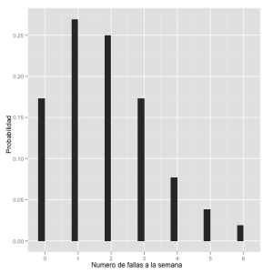

ggplot y funciones de distribución
R además de ser un estupendo software estadístico es capaz de generar gráficos muy elegantes gracias al paquete ggPlot.
Consideremos cierta máquina la cual puede fallar algunos días a la semana. La información obtenida al monitorear su funcionamiento por un año es el siguiente.
9 semanas no falló,
14 semanas falló un día,
13 semanas falló dos días,
9 semanas falló tres días,
4 semanas falló cuatro días,
2 semanas falló cinco días,
1 semana no funcionó ninguno de los seis días.
Lo primero que haremos es definir el muestreo que obtuvimos de ver el número de días a la semana que la máquina se encontraba descompuesta y la proporción que representa del total de semanas observadas.
Habiendo definido la densidad correspondiente al número de fallas. Veamos como graficar la correpondiente densidad y su distribución.
Ahora veamos el caso similar pero para una variable aleatoria con densidad continua. Para lo cual usaremos la función integrate para calcular las correspondientes integrales para calcular la distribución.